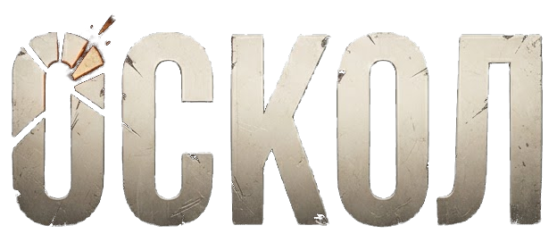

DEV 15 · НОЧНОЙ ДОЗОРОСТРОВ.
ОСТРОВ.
ТВОИ ПРАВИЛА.
Тёмная ночь. Зелёные огни.
Новые фоны и плавные переходы.

OFFLINE SURVIVALДороги соединяют районы острова.
Подготовка локального мира…
Тёмная ночь. Зелёные огни.
Новые фоны и плавные переходы.
Широкие возвышенности и ложбины вместо высоких острых пиков. Новая генерация при создании мира.
Извилистый берег, пологие пляжи, речная пойма и шельф. Прежние сохранения не переделываются.
Холмы и хребты ревизии 7 — в новом мире. Старый остров не меняет высоты. Его создание заменит прежнее сохранение после успешного входа. Продолжение сохраняет прежнюю карту.
Острову нужно чуть больше горизонта.
Обнови Chrome / Android System WebView и включи аппаратное ускорение. На этом устройстве 3D-мир пока не запустился.